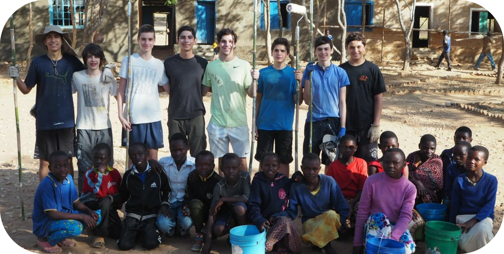

Mãos na Massa - Transformando Vidas e Conscientizando Gerações
Em um Brasil onde mais de 16 milhões de pessoas vivem com algum tipo de
deficiência, as dificuldades de acesso a moradias adequadas e a inclusão social são
desafios cotidianos. A ONG Mãos na Massa surgiu para enfrentar esses desafios de frente,
focando na transformação de vidas através da construção e adaptação de moradias e espaços
comunitários para pessoas com deficiência e em situação de vulnerabilidade social. Desde
sua fundação, a organização tem mobilizado jovens e adolescentes voluntários, capacitando e
conscientizando as novas gerações sobre a importância da acessibilidade e inclusão. Este
artigo explora a história dos Mãos na Massa, seu impacto, os desafios que enfrenta, e como
a ONG está se preparando para escalar suas operações e impactar ainda mais vidas em todo o Brasil.
A Origem: De Uma Experiência Internacional a Um Projeto Local
A Mãos na Massa nasceu em 2017, após um grupo de adolescentes brasileiros
participar de um programa de voluntariado na Tanzânia. Durante duas semanas, eles reformaram
uma escola primária, trazendo alegria e esperança para as crianças locais. Essa experiência
transformadora despertou nos jovens a vontade de replicar esse impacto em suas próprias comunidades
no Brasil. De volta a São Paulo, decidiram fundar uma ONG com o objetivo de melhorar a vida de
pessoas com deficiência e em situação de extrema vulnerabilidade, começando por onde mais conheciam
e sentiam que poderiam fazer a diferença: a construção e reforma de moradias e espaços comunitários.

Missão e Visão: Um Compromisso com a Inclusão e a Dignidade
- A missão da Mãos na Massa é clara e poderosa: transformar vidas, promovendo dignidade e inclusão
por meio da construção e adaptação de residências e instituições para pessoas com deficiência e/ou
em situação de vulnerabilidade social. Além de oferecer moradia segura e acessível, a ONG se dedica
a capacitar e conscientizar as novas gerações sobre os desafios enfrentados por essas pessoas no Brasil.
- A visão da organização é ambiciosa: ser uma ONG de referência nacional em acessibilidade e inclusão social,
impactando milhares de vidas e promovendo a construção de um Brasil mais justo e acessível para todos.
A Mãos na Massa atua em várias frentes, guiada pelos valores de inclusão, dignidade, empatia,
sustentabilidade, colaboraçãoe resiliência.
Impacto: Histórias de Transformação
- Desde sua fundação, a Mãos na Massa tem impactado diretamente a vida de inúmeras pessoas, realizando
projetos que variam desde a construção de moradias adaptadas até a reforma de instituições que atendem
pessoas com deficiências. Cada projeto concluído não é apenas um marco para os beneficiários, mas também
para os voluntários, que têm suas vidas transformadas ao se envolverem em ações de alto impacto social.
- A história de Sidcley e Luciane foi um dos primeiros projetos da ONG e simboliza bem o impacto transformador
que a Mãos na Massa busca proporcionar. Sidcley, que começou a perder a visão aos 27 anos, e sua esposa
Luciane, que também é deficiente visual, viviam em uma casa precária, sem condições de adaptação às suas
necessidades. A Mãos na Massa mobilizou recursos e voluntários para concluir a construção da casa do casal,
proporcionando-lhes um lar seguro e adaptado às suas necessidades. Esse projeto foi o início de uma série de
intervenções que mudaram a vida de muitas outras famílias em situação de vulnerabilidade.
- Outro exemplo é a reforma do Pequeno Cotolengo Paulista, uma instituição que acolhe crianças e adultos com
deficiências físicas e mentais. A ONG não só revitalizou as instalações, mas também trouxe cor e vida ao ambiente,
melhorando a qualidade de vida dos residentes. Esses projetos mostram como a Mãos na Massa vai além da construção
física, tocando vidas e criando um ambiente de inclusão e dignidade.
Desafios: Escalando para Atingir Mais Pessoas
- Embora a Mãos na Massa tenha alcançado muito desde sua fundação, os desafios para escalar suas operações
são significativos. O número de pessoas com deficiência no Brasil, cerca de 16 milhões, representa uma
oportunidade enorme, mas também um desafio logístico e financeiro. A demanda por moradias adaptadas e espaços
acessíveis é imensa, e a ONG precisa aumentar sua capacidade para atender a essa necessidade.
- Um dos maiores desafios enfrentados pela Mãos na Massa é o atraso na entrega das construções, muitas vezes
devido à falta de recursos e à dependência de empreiteiros que não cumprem os prazos acordados. Esse gargalo
afeta diretamente a capacidade da ONG de concluir projetos em tempo hábil, limitando seu impacto e a quantidade
de pessoas que podem ser beneficiadas.
- Além disso, a necessidade de parcerias estratégicas é crucial para a expansão das atividades da ONG. Parcerias
com outras ONGs, instituições de ensino, e empresas podem fornecer os recursos e o apoio necessários para escalar
as operações. Recentemente, a Mãos na Massa tem buscado essas alianças, como a parceria com o Instituto Coexistência
para a construção de uma EcoVilla, mas ainda há muito a ser feito.